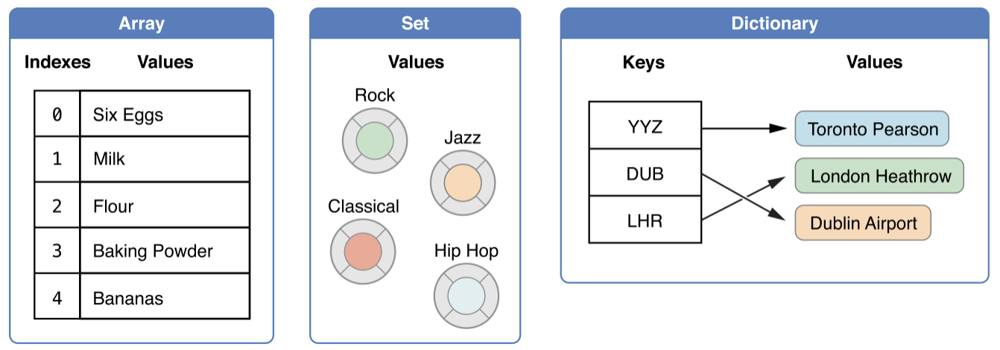

<!DOCTYPE html>
<html lang="zh-hant">

<head>

  <meta charset="utf-8">
  <meta name="viewport" content="width=device-width, initial-scale=1">
  <meta http-equiv="X-UA-Compatible" content="IE=edge">
  <meta name="generator" content="Source Themes Academic 4.8.0">

  

  
  
  
  
  
    
    
    
  
  

  <meta name="author" content="Zane Chen">

  
  
  
    
  
  <meta name="description" content="Swift 語法重點紀錄">

  
  <link rel="alternate" hreflang="zh-hant" href="https://u2633.github.io/post/2020/my-swift-learning-note/">

  


  
  
  
  <meta name="theme-color" content="rgb(0, 136, 204)">
  

  
  
  
  <script src="/js/mathjax-config.js"></script>
  

  
  
  
  
    
    <link rel="stylesheet" href="https://cdnjs.cloudflare.com/ajax/libs/academicons/1.8.6/css/academicons.min.css" integrity="sha256-uFVgMKfistnJAfoCUQigIl+JfUaP47GrRKjf6CTPVmw=" crossorigin="anonymous">
    <link rel="stylesheet" href="https://cdnjs.cloudflare.com/ajax/libs/font-awesome/5.12.0-1/css/all.min.css" integrity="sha256-4w9DunooKSr3MFXHXWyFER38WmPdm361bQS/2KUWZbU=" crossorigin="anonymous">
    <link rel="stylesheet" href="https://cdnjs.cloudflare.com/ajax/libs/fancybox/3.5.7/jquery.fancybox.min.css" integrity="sha256-Vzbj7sDDS/woiFS3uNKo8eIuni59rjyNGtXfstRzStA=" crossorigin="anonymous">

    
    
    
      
    
    
      
      
        
          <link rel="stylesheet" href="https://cdnjs.cloudflare.com/ajax/libs/highlight.js/9.18.1/styles/github.min.css" crossorigin="anonymous" title="hl-light" disabled>
          <link rel="stylesheet" href="https://cdnjs.cloudflare.com/ajax/libs/highlight.js/9.18.1/styles/dracula.min.css" crossorigin="anonymous" title="hl-dark">
        
      
    

    
    <link rel="stylesheet" href="https://cdnjs.cloudflare.com/ajax/libs/leaflet/1.5.1/leaflet.css" integrity="sha256-SHMGCYmST46SoyGgo4YR/9AlK1vf3ff84Aq9yK4hdqM=" crossorigin="anonymous">
    

    

    
    
      

      
      

      
    
      

      
      

      
    
      

      
      

      
    
      

      
      

      
    
      

      
      

      
    
      

      
      

      
    
      

      
      

      
    
      

      
      

      
    
      

      
      

      
    
      

      
      

      
    
      

      
      

      
        <script src="https://cdnjs.cloudflare.com/ajax/libs/lazysizes/5.1.2/lazysizes.min.js" integrity="sha256-Md1qLToewPeKjfAHU1zyPwOutccPAm5tahnaw7Osw0A=" crossorigin="anonymous" async></script>
      
    
      

      
      

      
    
      

      
      

      
    
      

      
      

      
        <script src="https://cdn.jsdelivr.net/npm/mathjax@3/es5/tex-chtml.js" integrity="" crossorigin="anonymous" async></script>
      
    
      

      
      

      
    

  

  
  
  
  <link rel="stylesheet" href="https://fonts.googleapis.com/css?family=B612+Mono:400,700%7COrbitron:400,700&display=swap">
  

  
  
  
  
  <link rel="stylesheet" href="/css/academic.css">

  


  


  

  <link rel="manifest" href="/index.webmanifest">
  <link rel="icon" type="image/png" href="/images/icon_hu4b75b0750a7644dfba4c3cde2b8c5154_77905_32x32_fill_lanczos_center_2.png">
  <link rel="apple-touch-icon" type="image/png" href="/images/icon_hu4b75b0750a7644dfba4c3cde2b8c5154_77905_192x192_fill_lanczos_center_2.png">

  <link rel="canonical" href="https://u2633.github.io/post/2020/my-swift-learning-note/">

  
  
  
  
  
    
    
  
  
  <meta property="twitter:card" content="summary">
  
  <meta property="og:site_name" content="Z@NE.NOTE">
  <meta property="og:url" content="https://u2633.github.io/post/2020/my-swift-learning-note/">
  <meta property="og:title" content="我的 Swift 學習之旅 | Z@NE.NOTE">
  <meta property="og:description" content="Swift 語法重點紀錄"><meta property="og:image" content="https://u2633.github.io/images/icon_hu4b75b0750a7644dfba4c3cde2b8c5154_77905_512x512_fill_lanczos_center_2.png">
  <meta property="twitter:image" content="https://u2633.github.io/images/icon_hu4b75b0750a7644dfba4c3cde2b8c5154_77905_512x512_fill_lanczos_center_2.png"><meta property="og:locale" content="zh-hant">
  
    
      <meta property="article:published_time" content="2020-03-15T17:00:26&#43;08:00">
    
    <meta property="article:modified_time" content="2020-03-15T17:00:26&#43;08:00">
  

  


    


  


<script type="application/ld+json">
{
  "@context": "https://schema.org",
  "@type": "BlogPosting",
  "mainEntityOfPage": {
    "@type": "WebPage",
    "@id": "https://u2633.github.io/post/2020/my-swift-learning-note/"
  },
  "headline": "我的 Swift 學習之旅",
  
  "datePublished": "2020-03-15T17:00:26+08:00",
  "dateModified": "2020-03-15T17:00:26+08:00",
  
  "author": {
    "@type": "Person",
    "name": "zane"
  },
  
  "publisher": {
    "@type": "Organization",
    "name": "Z@NE.NOTE",
    "logo": {
      "@type": "ImageObject",
      "url": "https://u2633.github.io/images/icon_hu4b75b0750a7644dfba4c3cde2b8c5154_77905_192x192_fill_lanczos_center_2.png"
    }
  },
  "description": "Swift 語法重點紀錄"
}
</script>

  

  


  


  


  <title>我的 Swift 學習之旅 | Z@NE.NOTE</title>

</head>

<body id="top" data-spy="scroll" data-offset="70" data-target="#TableOfContents" class="dark">

  <aside class="search-results" id="search">
  <div class="container">
    <section class="search-header">

      <div class="row no-gutters justify-content-between mb-3">
        <div class="col-6">
          <h1>搜尋</h1>
        </div>
        <div class="col-6 col-search-close">
          <a class="js-search" href="#"><i class="fas fa-times-circle text-muted" aria-hidden="true"></i></a>
        </div>
      </div>

      <div id="search-box">
        
        <input name="q" id="search-query" placeholder="搜尋..." autocapitalize="off"
        autocomplete="off" autocorrect="off" spellcheck="false" type="search">
        
      </div>

    </section>
    <section class="section-search-results">

      <div id="search-hits">
        
      </div>

    </section>
  </div>
</aside>


  


<nav class="navbar navbar-expand-lg navbar-light compensate-for-scrollbar" id="navbar-main">
  <div class="container">

    
    <div class="d-none d-lg-inline-flex">
      <a class="navbar-brand" href="/">Z@NE.NOTE</a>
    </div>
    

    
    <button type="button" class="navbar-toggler" data-toggle="collapse"
            data-target="#navbar-content" aria-controls="navbar" aria-expanded="false" aria-label="切換導航">
    <span><i class="fas fa-bars"></i></span>
    </button>
    

    
    <div class="navbar-brand-mobile-wrapper d-inline-flex d-lg-none">
      <a class="navbar-brand" href="/">Z@NE.NOTE</a>
    </div>
    

    
    
    <div class="navbar-collapse main-menu-item collapse justify-content-start" id="navbar-content">

      
      <ul class="navbar-nav d-md-inline-flex">
        

        

        
        
        
          
        

        
        
        
        
        
        
          
          
          
            
          
          
        

        <li class="nav-item">
          <a class="nav-link " href="/#about"><span>關於</span></a>
        </li>

        
        

        

        
        
        
          
        

        
        
        
        
        
        
          
          
          
            
          
          
        

        <li class="nav-item">
          <a class="nav-link " href="/#posts"><span>文章</span></a>
        </li>

        
        

        

        
        
        
          
        

        
        
        
        
        
        
          
          
          
            
          
          
        

        <li class="nav-item">
          <a class="nav-link " href="/#projects"><span>專案</span></a>
        </li>

        
        

        

        
        
        
          
        

        
        
        
        
        
        
          
          
          
            
          
          
        

        <li class="nav-item">
          <a class="nav-link " href="/#contact"><span>聯絡我</span></a>
        </li>

        
        

      

        
      </ul>
    </div>

    <ul class="nav-icons navbar-nav flex-row ml-auto d-flex pl-md-2">
      
      <li class="nav-item">
        <a class="nav-link js-search" href="#"><i class="fas fa-search" aria-hidden="true"></i></a>
      </li>
      

      
      <li class="nav-item">
        <a class="nav-link js-dark-toggle" href="#"><i class="fas fa-moon" aria-hidden="true"></i></a>
      </li>
      

      

    </ul>

  </div>
</nav>


  <article class="article">

  


  

  
  
  
<div class="article-container pt-3">
  <h1>我的 Swift 學習之旅</h1>

  

  
    


<div class="article-metadata">

  
  
  
  
  <div>
    

  
  <span><a href="/authors/zane/">zane</a></span>
  </div>
  
  

  
  <span class="article-date">
    
    
      
    
    2020年3月15日
  </span>
  

  

  
  <span class="middot-divider"></span>
  <span class="article-reading-time">
    12 閱讀時間（分鐘）
  </span>
  

  
  
  

  
  
  <span class="middot-divider"></span>
  <span class="article-categories">
    <i class="fas fa-folder mr-1"></i><a href="/categories/swift/">swift</a></span>
  

</div>

    


  
</div>


  <div class="article-container">

    <div class="article-style">
      <h2 id="前言">前言</h2>
<p>終於開始了我<code>正式</code>的 SWIFT 學習之路，會說正式是因為在過去片段學習的日子裡，我只是看著
<a href="https://docs.swift.org/" target="_blank" rel="noopener">官方文件</a> 並照著各個章節的順序以<code>看</code>的方式並試著理解文章內容預讀罷了。但是，在瀏覽過網路上許多人的學習方式，我的總結是<code>做筆記</code>。
因為，做筆記一方面是為了紀錄所學，另一方面是為了能夠把所學利用描述轉化成自己的知識，而且會儘量以能讓人容易理解的文字加以描述。
這個做法的好處一方面能讓自己在未來的日子裡要復習時更有印象，另一方面可以讓其他使用者在看文章的時候也能快速理解。
但是，關於<code>如何有效的做筆記</code>我也仍然還在學習，或許之後也會寫另一篇文章關於這方面的。</p>
<h2 id="宣告">宣告</h2>
<h3 id="變數與常數">變數與常數</h3>
<p>Swift 只有兩種宣告型態，一種是<em>變數</em>以<code>var</code>做前綴的方式，另一種就是<em>常數</em>以<code>let</code>為前綴</p>
<pre><code class="language-swift">var a = 10  // 可以重新賦值
let b = 20  // 不可以重新賦值
</code></pre>
<h3 id="型別註解">型別註解</h3>
<p>宣告時如果已經確定型別也可以直接賦予型別</p>
<pre><code class="language-swift">var a: Int = 10
let b: Double = 20.0
</code></pre>
<h3 id="型別推斷">型別推斷</h3>
<p>一般宣告方式如果沒有<code>型別註解</code>，Swift 會主動幫我們做判斷，稱為<code>型別推斷</code></p>
<h3 id="變數名稱">變數名稱</h3>
<p>Swift 的命名可以使用<code>Unicode</code>來命名。所以，我們亦可以使用繁體中文做為命名方式</p>
<pre><code class="language-swift">let Ω = &quot;omega&quot;
let 狗 = &quot;🐶&quot;
</code></pre>
<h3 id="型別轉換">型別轉換</h3>
<p>Swift 是個強型別的語言。所以，在做非同型別的計算時必需使用轉型語法。</p>
<pre><code class="language-swift">let a: Int = 10
let b: Double = 10.0

let c = (Double)a + b
</code></pre>
<h3 id="匿名型別">匿名型別</h3>
<p>有時候為了可讀性，我們可以使用<code>匿名型別</code>來開發。</p>
<pre><code class="language-swift">typealias Age = Int

let age: Age = 10
</code></pre>
<h2 id="基本型別">基本型別</h2>
<h3 id="整數">整數</h3>
<p>整數在宣告時會根據不同的平台自動使用成<code>Int32</code>或是<code>Int64</code>，並且也具有<em>有號整數</em><code>Int</code>與<em>無號整數</em><code>UInt</code></p>
<pre><code class="language-swift">let minValue = UInt8.min  // 0
let maxValue = UInt8.max  // 255

let minIntValue = Int8.min  // -128
let maxIntValue = Int8.max  // 127
</code></pre>
<h3 id="浮點數">浮點數</h3>
<p><code>Double</code>為 64 位元，<code>float</code>為 32 位元</p>
<pre><code class="language-swift">let pi: Double = 3.1415926535
let weight: Float = 66.8
</code></pre>
<h3 id="布林值">布林值</h3>
<p>與其他程式語言一樣，也是以<code>true</code>或<code>false</code>為值。比較值得一提的是，在 Swift 裡的 if&hellip;else
描述句裡，條件判斷式的值僅能是<code>布林值</code></p>
<pre><code class="language-swift">let isTrue = true
let isFalse = false

if isTrue {
  // 可以正常執行
}

if 1 {
  // 發生錯誤 'Int' is not convertible to 'Bool'
}

</code></pre>
<h3 id="元組">元組</h3>
<p>元組為多個值組合而成的群組型別。</p>
<pre><code class="language-swift">let http404Error = (404, &quot;Not Found!&quot;)
// equal to
let http404Error:(Int, String) = (404, &quot;Not Found!&quot;)

// 解構賦值
let (justTheStatusCode, _) = http404Error

// 存取元組
http404Error.0  // 404
http404Error.1  // &quot;Not Found!&quot;

// 宣告並賦予元素名稱
let http200Status = (statusCode: 200, description: &quot;OK&quot;)
http200Status.statusCode  // 200
http200Status.description // &quot;OK&quot;
</code></pre>
<h2 id="optional-宣告">Optional 宣告</h2>
<p>Swift 在宣告時必需明確給予值。但如果我們的變數是在後來才被賦值的話，就必需宣告成<code>Optional</code>型別</p>
<pre><code class="language-swift">let s: String?
s = &quot;new string&quot;
</code></pre>
<h3 id="nil-coalescing-運算元">Nil-Coalescing 運算元</h3>
<p>一般的三元運算為<code>a != nil ? a! : b</code>。Nil-Coalescing 的語法為<code>a ?? b</code>，如果<code>a</code>有值則返回<code>a</code>，
反之則返回<code>b</code></p>
<h2 id="範圍運算子">範圍運算子</h2>
<h3 id="closed-range">Closed Range</h3>
<p>語法:<code>1...5</code>，迭代<code>1~5</code></p>
<pre><code class="language-swift">for index in 1...5 {
    print(&quot;\(index) times 5 is \(index * 5)&quot;)
}
</code></pre>
<h3 id="half-open-range">Half-Open Range</h3>
<p>語法:<code>1..&lt;5</code>，僅迭代<code>1-4</code></p>
<pre><code class="language-swift">for i in 0..&lt;5 {
    print(i)
}
</code></pre>
<h3 id="單向範圍">單向範圍</h3>
<p>語法:<code>...</code></p>
<pre><code class="language-swift">let names = [&quot;Anna&quot;, &quot;Alex&quot;, &quot;Brian&quot;, &quot;Jack&quot;]

for name in names[2...] {
    print(name)
}
// Brian
// Jack

for name in names[...2] {
    print(name)
}
// is equal to
let range = ...2
for name in names[range] {
  print(name)
}

// Anna
// Alex
// Brian

for name in names[..&lt;2] {
    print(name)
}
// Anna
// Alex
</code></pre>
<h2 id="字串與字元">字串與字元</h2>
<p>字串為<code>值型別</code>。
字串可以多行並且保留原始格式</p>
<pre><code class="language-swift">let s: String = &quot;&quot;&quot;
你好
   這是第二行，且啟始位置有兩個空格
這是第三行
&quot;&quot;&quot;
</code></pre>
<h2 id="集合型別">集合型別</h2>
<p>Swift 有三種集合型別，<code>Array</code>、<code>Set</code> 及 <code>Dictionary</code>，關念也與其他語言一樣。</p>
<p></p>
<p>集合型別預設為<code>可修改(mutable)</code>狀態，如果要令其成員無法被修改，僅需要使用<code>let</code>宣告</p>
<pre><code class="language-swift">let a = [String]()        // array
let s = Set&lt;Character&gt;()  // set
let d = [Int: String]()   // dictionary
</code></pre>
<h3 id="陣列array">陣列(Array)</h3>
<p>陣列原始宣告語法為<code>Array&lt;TYPE&gt;()</code>，短語法為<code>[]</code></p>
<pre><code class="language-swift">var a1 = Array(repeating: 0.0, count: 3)   // 原始語法
var a2 = [0.0, 0.0, 0.0]                    // 短語法
</code></pre>
<p>陣列相加可以得到新的陣列</p>
<pre><code class="language-swift">let a1 = [1, 2, 3]
let a2 = [3, 4, 5]

let a3 = a1 + a2 // [1, 2, 3, 4, 5]
</code></pre>
<p>若是想迭代陣列元素，可以直接存取元素或是以<strong>列舉</strong>(<code>enumerated</code>)的方式取得<code>索引值</code>及<code>元素</code></p>
<pre><code class="language-swift">// 直取
for item in someArray {
  print(item)
}

// 列舉
for (index, value) in someArray {
  print(&quot;Item \(index + 1): \(value)&quot;)
}

</code></pre>
<h3 id="集合set">集合(Set)</h3>
<p>一種<code>無序</code>且僅具有<code>唯一值</code>的集合型別。宣告語法為<code>Set&lt;TYPE&gt;()</code>，</p>
<pre><code class="language-swift">let set1 = Set&lt;Int&gt;()           // 空集合
let set2: Set&lt;Int&gt; = [1, 2, 3]  // 字面值
</code></pre>
<p>Set 可以做<code>交集(intersection)</code>、<code>聯集(union)</code>、<code>差集(subtracting)</code>及<code>對稱差集(symmetric difference)</code></p>
<pre><code class="language-swift">let oddDigits: Set = [1, 3, 5, 7, 9]
let evenDigits: Set = [0, 2, 4, 6, 8]
let singleDigitPrimeNumbers: Set = [2, 3, 5, 7]

// intersection
oddDigits.intersection(evenDigits).sorted()

// union
oddDigits.union(evenDigits).sorted()  // [0, 1, 2, 3, 4, 5, 6, 7, 8, 9]

// subtracting
oddDigits.subtracting(singleDigitPrimeNumbers).sorted() // [1, 9]

// symmetric difference
oddDigits.symmetricDifference(singleDigitPrimeNumbers).sorted() // [1, 2, 9]
</code></pre>
<h3 id="字典dictionary">字典(Dictionary)</h3>
<p>以<code>唯一鍵值(key)</code>與<code>值(value)</code>組合而成的集合型別。原始宣告語法為<code>Dictionary&lt;Key, Value&gt;</code>。</p>
<pre><code class="language-swift">var d1 = [Int: String]()    // 空字典
var d2 = [&quot;1&quot;: 1, &quot;2&quot;: 2]   // 字面值宣告
d2 = [:]                    // 清空字典

// 迭代字典
for (k, v) in d2 {
  print(&quot;\(k): \(v)&quot;)
}
</code></pre>
<h2 id="流程控制">流程控制</h2>
<h3 id="for-in">For-In</h3>
<p>For-In 可以忽略迭代的值</p>
<pre><code class="language-swift">for _ in 1...5 {
  print(&quot;hi&quot;)
}
</code></pre>
<h3 id="while">While</h3>
<p>與其他語言相似，差別只在 Swift 中的條件式都只能接受布林值(Bool)，也就是 True/False，
不然會報錯。</p>
<pre><code class="language-swift">let condition = true
while condition {
  print(&quot;Hello&quot;)
}
</code></pre>
<h3 id="repeat-while">Repeat-While</h3>
<p>有些語言叫<code>do...while</code>，但其目的都一樣，一定會執行一次程式區段。</p>
<pre><code class="language-swift">let condition = true
repeat {
  print(&quot;Hello&quot;)
} while condition
</code></pre>
<h3 id="if">If</h3>
<p>其判斷式也僅接受布林值(Bool)</p>
<pre><code class="language-swift">let condition = true
if condition {
  print(&quot;Hello&quot;)
}
</code></pre>
<h3 id="switch">Switch</h3>
<p>Switch 判斷式讓我覺得很彈性變得更大且運用得當的話，反而能讓程式碼更簡潔。</p>
<p>基本語法會自動跳離(<code>break</code>)執行成立的區段</p>
<pre><code class="language-swift">let c = &quot;z&quot;
switch c {
  case &quot;a&quot;:
    print(&quot;a&quot;)
  case &quot;z&quot;:
    print(&quot;z&quot;)
  default:
    print(&quot;unknown&quot;)
}
// print &quot;z&quot;
</code></pre>
<p>具有多個相同狀態的條件</p>
<pre><code class="language-swift">let c = &quot;Z&quot;
switch c {
  case &quot;a&quot;:
    print(&quot;a&quot;)
  case &quot;z&quot;, &quot;Z&quot;:
    print(&quot;z&quot;)
  default:
    print(&quot;unknown&quot;)
}
// print &quot;z&quot;
</code></pre>
<p>區間匹配</p>
<pre><code class="language-swift">let i = 52
switch i {
  case 0:
    print(&quot;0&quot;)
  case 1..&lt;25:
    print(&quot;1~25, not include 25&quot;)
  case 25..&lt;50:
    print(&quot;25~50, not include 50&quot;)
  case 50..&lt;100:
    print(&quot;50~100, not include 100&quot;)
  default:
    print(&quot;not in the range of number&quot;)
}
// print &quot;50~100, not include 100&quot;
</code></pre>
<p>元組(Tuple)條件式</p>
<pre><code class="language-swift">let point = (1, 1)
switch point {
  case (0, 0):
    print(&quot;\(point) is at the origin&quot;)
  case (_, 0):
    print(&quot;\(point) is on the x-axis&quot;)
  case (0, _):
    print(&quot;\(point) is on the y-axis&quot;)
  case (-2...2, -2...2):
    print(&quot;\(point) is inside the box&quot;)
  default:
    print(&quot;outside!&quot;)
}
</code></pre>
<p>若有使用條件式的數值需求，可使用<code>數值綁定</code>功能實現</p>
<pre><code class="language-swift">let point = (2, 0)
switch point {
  case (let x, 0):
  case (0, let y):
  case let (x, y):
}
</code></pre>
<p>在使用<code>數值綁定</code>後可再利用<code>where</code>進行條件判斷</p>
<pre><code class="language-swift">let point = (1, -1)
switch point {
  case let (x, y) where x == y:
    print(&quot;(\(x), \(y)) is on the line x == y&quot;)
  case let (x, y) where x == -y:
    print(&quot;(\(x), \(y)) is on the line x == -y&quot;)
  case let (x, y):
    print(&quot;(\(x), \(y)) is just some arbitrary point&quot;)
}
</code></pre>
<p>如需讓下一個<code>case</code>執行，只需要在執行區塊中最後加入<code>fallthrough</code>關鍵字</p>
<pre><code class="language-swift">let i = 5
switch i {
  case 5:
    print(&quot;it is 5&quot;)
    fallthrough
  default:
    print(&quot; and it is end&quot;)
}
// print &quot;it is 5 and it is end&quot;
</code></pre>
<h3 id="標簽陳述">標簽陳述</h3>
<p>標簽陳述(Labeled Statements)可嵌套在<code>條件判斷式</code>或是<code>迴圈</code>中</p>
<pre><code class="language-Swift">myLabel: if true {
    for _ in 1...1000 {
        for _ in 1...1000 {
            print(&quot;hello&quot;)
            break myLabel
        }
    }
}

if true {
    myLabel: for _ in 1...1000 {
        for _ in 1...1000 {
            print(&quot;hello&quot;)
            break myLabel
        }
    }
}

myLabel: while true {
    print(&quot;hello&quot;)
    break myLabel
}

// 上述三個標簽陳述句結果都僅列印一次&quot;hello&quot;
</code></pre>
<h3 id="guard">Guard</h3>
<p>簡單說，<code>Guard</code>就是一種反向的<code>if</code>，也就是<code>條件不成立則執行程式區塊</code>，只是與<code>if</code>的差別在於永遠會有<code>else</code>區塊
以及<code>guard let</code>後的常數可以在後續使用，但<code>if let</code>後的常數僅能使用在執行區塊內</p>
<pre><code class="language-swift">func greet(person: [String: String]) {
  guard let name = person[&quot;name&quot; ] else {
    return
  }

  print(&quot;Hello \(name)&quot;)

  guard let location = person[&quot;location&quot;] else {
    print(&quot;I hope the weather is nice near you.&quot;)
    return
  }
  print (&quot;I hope the weather is nice in \(location).&quot;)
}

// multiple guard

guard let a = a1, let b = b1, let, c = c1 else {
  return
}
</code></pre>
<h3 id="api-可用性檢查">API 可用性檢查</h3>
<p>使用者不可能全部都是使用一樣的作業系統版本，但為了能使一套程式碼通用，API 的可用性檢查就重要多了</p>
<pre><code class="language-swift">if #available(iOS 10, macOS 10.22, *) {
  // Use iOS 10 APIs on iOS, and use macOS 10.12 APIs on macOS
} else {
  // Do something
}
</code></pre>
<h2 id="函數">函數</h2>
<p>可傳回多個值</p>
<pre><code class="language-swift">func myFunc() -&gt; (Int, Int) {
  return (1, 2)
}
</code></pre>
<p>若回傳的數值可能為<code>nil</code>，必需在回傳敘述最後加上<code>選擇性(optional, ?)</code>關鍵字</p>
<pre><code class="language-swift">func myFunc() -&gt; (Int, Int)? {
  return (nil, nil)
}
</code></pre>
<p>可以定義<code>參數標簽(Argument Labels)</code>及<code>參數名稱(Parameter Names)</code>，如果沒有定義標簽，
預設會與名稱相同。</p>
<pre><code class="language-swift">func myFunc(param: String) {
  print(param)
}

myFunc(param: &quot;Hi&quot;)
</code></pre>
<pre><code class="language-swift">func myFunc(argumentLabel parameterName: String) {
  print(parameterName)
}

myFunc(argumentLabel: &quot;Hi&quot;)
</code></pre>
<p>宣告時可以忽略<code>參數標簽</code>，呼叫時會很方便，但個人覺得會失去可讀性</p>
<pre><code class="language-swift">func myFunc(_ paramName: String) {
  print(paramName)
}

myFunc(&quot;Hi&quot;)
</code></pre>
<p>可賦予參數初始值，<code>但僅能放在一般參數之後</code></p>
<pre><code class="language-swift">func myFunc(_ paramWithoutDefault: Int, _ paramWithDefault: Int = 10) {
  print(paramWithoutDefault, paramWithDefault)
}

myFunc(1, 3)  // Prints &quot;1, 3&quot;
myFunc(1)     // Prints &quot;1, 10&quot;
</code></pre>
<p>可使用不定長度參數</p>
<pre><code class="language-swift">func myFunc(_ numbers: Int...) -&gt; Int {
  var sum = 0
  for i in numbers {
    sum += i
  }
  return sum
}

myFunc(1, 2, 3) // Prints 7
</code></pre>
<p>參數預設為<code>常數</code>，若對其做改變會造成<code>compile-error</code>，如果改變參數本身的值需要在<code>型別</code>前加上
<code>inout</code>關鍵字，並且在呼叫函式時在傳入的變數前面加上<code>取值運算子(&amp;)</code></p>
<pre><code class="language-swift">func myFunc(_ a: inout Int) {
  a += 10
}

var a = 10

myFunc(&amp;i)

print(a)  // 20
</code></pre>
<h2 id="閉包">閉包</h2>
<p>就是<code>匿名函式</code>，可以在程式碼中被傳遞，有三種型態</p>
<ul>
<li>一般函式 - 具有名稱的閉包</li>
<li>巢狀函式 - 內部函數可以取得包裝其本身外部函式的成員</li>
<li>閉包表達式 - 一種簡潔的不具名函式，在別的程式語言或被稱 Callback Function</li>
</ul>
<p><code>閉包表達式</code>具有四種特性:</p>
<ul>
<li>自動推斷參數及返回值的型別</li>
<li>隱式返回單一描述句的結果</li>
<li>快速參數名稱</li>
<li>尾隨語法</li>
</ul>
<p>表達式語法</p>
<pre><code class="language-swift">{ (parameters) -&gt; returnType in
  // do something
}
</code></pre>
<p>一般寫法</p>
<pre><code class="language-swift">let names = [&quot;Chris&quot;, &quot;Alex&quot;, &quot;Ewa&quot;, &quot;Barry&quot;, &quot;Daniella&quot;]

func backward(_ s1: String, _ s2: String) -&gt; bool {
  return s1 &gt; s2
}

var reversedNames = names.sorted(by: backward)
// [&quot;Ewa&quot;, &quot;Daniella&quot;, &quot;Chris&quot;, &quot;Barry&quot;, &quot;Alex&quot;]
</code></pre>
<p>使用匿名寫法</p>
<pre><code class="language-swift">var reversedNames = names.sorted(by: { s1: String, s2: String -&gt; bool in
  return s1 &gt; s2
})
</code></pre>
<p>因為自動推斷的特性，所以可以改成</p>
<pre><code class="language-swift">var reversedNames = names.sorted(by: { s1, s2 -&gt; in return s1 &gt; s2 })
</code></pre>
<p>再加上單行描述句可以省略<code>return</code></p>
<pre><code class="language-swift">var reversedNames = names.sorted(by: { s1, s2 -&gt; in s1 &gt; s2 })
</code></pre>
<p>因為自動提供<code>快速參數($0, $1, $2)</code>的特性</p>
<pre><code class="language-swift">var reversedNames = names.sorted(by: { $0 &gt; $1 })
</code></pre>
<p>還有更簡潔的<code>運算子方法</code></p>
<pre><code class="language-swift">var reversedNames = names.sorted(by: &gt; )
</code></pre>
<p>如果函式的最後一個參數是閉包表達式，就可以使用<code>尾隨閉包</code>的表達方式</p>
<pre><code class="language-swift">var reversedNames = names.sorted() { $0 &gt; $1}
</code></pre>
<p>若閉包為<code>唯一參數</code>，刮號亦可省略</p>
<pre><code class="language-swift">var reversedNames = names.sorted { $0 &gt; $1}
</code></pre>
<p>閉包為<code>參考型別</code>，也就是當閉包函式被建立後，如果被當作值賦予給其他變數，此變數會參考到原始的閉包函式，
而不是全新的閉包函式</p>
<pre><code class="language-swift">func makeIncrementer(forIncrement amount: Int) -&gt; () -&gt; Int {
    var runningTotal = 0
    func incrementer() -&gt; Int {
        runningTotal += amount
        return runningTotal
    }
    return incrementer
}

let a = makeIncrementer(forIncrement: 10)
a() // 10
a() // 20

let a1 = a  // a1參考a
a1() //30
</code></pre>
<p>如果閉包被當作函式的參數傳遞，但又是在函式執行完後才被執行就會形成<code>跳脫閉包</code>，
需要在參數的型別前加上<code>@escaping</code>修飾字</p>
<pre><code class="language-swift">var handlers: [() -&gt; Void] = []
func someFuncWithEscapingClosure(completionHandler: @escaping () -&gt; Void) {
  handlers.append(completionHandler)
}
</code></pre>
<p>要讓傳遞閉包有如傳遞一般參數一樣不需要大刮號({})，且又具有延遲處理的功能，稱為<code>自動閉包(Autoclosures)</code></p>
<p>一般閉包</p>
<pre><code class="language-swift">var customerInLine = [&quot;Chris&quot;, &quot;Alex&quot;, &quot;Ewa&quot;, &quot;Barry&quot;, &quot;Daniella&quot;]
print(customersInLine.count)
// Prints &quot;5&quot;

let customerProvider = { customersInLine.remove(at: 0) }
print(customersInLine.count)
// Prints &quot;5&quot;

print(&quot;Now serving \(customerProvider())!&quot;)
// Prints &quot;Now serving Chris!&quot;

print(customersInLine.count)
// Prints &quot;4&quot;
</code></pre>
<p>等同於</p>
<pre><code class="language-swift">// customersInLine is [&quot;Alex&quot;, &quot;Ewa&quot;, &quot;Barry&quot;, &quot;Daniella&quot;]
func serve(customer customerProvider: () -&gt; String) {
    print(&quot;Now serving \(customerProvider())!&quot;)
}
serve(customer: { customersInLine.remove(at: 0) } )
// Prints &quot;Now serving Alex!&quot;
</code></pre>
<p>又等同於</p>
<pre><code class="language-swift">// customersInLine is [&quot;Ewa&quot;, &quot;Barry&quot;, &quot;Daniella&quot;]
func serve(customer customerProvider: @autoclosure () -&gt; String) {
    print(&quot;Now serving \(customerProvider())!&quot;)
}
serve(customer: customersInLine.remove(at: 0))
// Prints &quot;Now serving Ewa!&quot;
</code></pre>
<p><code>@autoclosure</code>與<code>@escaping</code>亦可同時使用</p>
<pre><code class="language-swift">// customersInLine is [&quot;Barry&quot;, &quot;Daniella&quot;]
var customerProviders: [() -&gt; String] = []
func collectCustomerProviders(_ customerProvider: @autoclosure @escaping () -&gt; String) {
    customerProviders.append(customerProvider)
}
collectCustomerProviders(customersInLine.remove(at: 0))
collectCustomerProviders(customersInLine.remove(at: 0))

print(&quot;Collected \(customerProviders.count) closures.&quot;)
// Prints &quot;Collected 2 closures.&quot;
for customerProvider in customerProviders {
    print(&quot;Now serving \(customerProvider())!&quot;)
}
// Prints &quot;Now serving Barry!&quot;
// Prints &quot;Now serving Daniella!&quot;
</code></pre>
<h2 id="列舉">列舉</h2>
<p>比起 C 語言或是其他語言，Swift 的列舉更有彈性。在宣告時，不需要給予每個成員初值且可以是任何型態，
如: String、Character 或是任何 Int 與浮點數</p>
<p>一般宣告</p>
<pre><code class="language-swift">enum CompassPoint {
  case north
  case south
  case east
  case west
}
// 等同於
enum CompassPoint {
  case north, south, east, west
}
</code></pre>
<p>如果已經初始化過，在之後要調用時可以省略列舉名稱</p>
<pre><code class="language-swift">var direction = CompassPoint.south

switch directionToHead {
case .north:
    print(&quot;Lots of planets have a north&quot;)
case .south:
    print(&quot;Watch out for penguins&quot;)
case .east:
    print(&quot;Where the sun rises&quot;)
case .west:
    print(&quot;Where the skies are blue&quot;)
}
// Prints &quot;Watch out for penguins&quot;
</code></pre>
<p>迭代列舉成員</p>
<pre><code class="language-swift">for point in CompassPoint.allCases {
  print(point)
}
// north
// south
// east
// west
</code></pre>
<p>定義列舉成員且擁有<code>關聯值(Associated Values)</code></p>
<pre><code class="language-swift">enum Barcode {
  case upc(Int, Int, Int, Int)
  case qrCode(String)
}

var prodcutBarcode = Barcode.upc(8, 85090, 51226, 3)

productBarcode = .qrCode(&quot;ABCDEFGH&quot;)

switch productBarcode {
  case .upc(let numberSystem, let manufacturer, let product, let check):
    print(&quot;UPC: \(numberSystem), \(manufacturer), \(product), \(check).&quot;)
  case .qrCode(let productCode):
    print(&quot;QR code: \(productCode).&quot;)
}
// Prints &quot;QR code: ABCDEFGHIJKLMNOP.&quot;
</code></pre>
<p>要賦予列舉成員初始值，可以使用<code>隱式賦予原始值(Implicitly Assigned Raw Value)</code></p>
<pre><code class="language-swift">enum Planet: Int {
  case mercury = 1, venus, earth, mars, jupiter, saturn
}
// venus = 2, earth = 3, and so on.

enum CompassPoint: String {
  case north, south, east, west
}
// north 的原始值為 &quot;north&quot;
</code></pre>
<p>利用<code>原始值</code>進行初始化</p>
<pre><code class="language-swift">let possiblePlanet = Planet(rawValue: 1)
// 等同於 Planet.mercury
</code></pre>
<p>如果利用<code>不存在的原始值</code>進行初始化，將會得到<code>nil</code></p>
<pre><code class="language-swift">let position = 7  // it is inexistent
if let somePlanet = Planet(rawValue: position)
</code></pre>
<p>如果<code>列舉中存在此列舉的實例並且作為成員中的關聯值</code>將會形成<code>遞迴列舉</code>，必需要在<code>case</code>前加入<code>indirect</code></p>
<pre><code class="language-swift">enum ArithmeticExpression {
    case number(Int)
    indirect case addition(ArithmeticExpression, ArithmeticExpression)
    indirect case multiplication(ArithmeticExpression, ArithmeticExpression)
}
</code></pre>
<p>或是在列舉主體加入<code>indirect</code>，宣告所有 case 都是遞迴列舉</p>
<pre><code class="language-swift">indirect enum ArithmeticExpression {
    case number(Int)
    case addition(ArithmeticExpression, ArithmeticExpression)
    case multiplication(ArithmeticExpression, ArithmeticExpression)
}
</code></pre>
<p>上述列舉可以儲存三種運算式: 純數字(<code>number</code>)、加法(<code>addition</code>)及乘法(<code>multiplication</code>)，
比如: 要運算(5 + 4) * 2 這個運算式拆解後就可以利用遞迴將關聯值</p>
<pre><code class="language-swift">let five = ArithmeticExpression.number(5)
let four = ArithmeticExpression.number(4)
let sum = ArithmeticExpression.addition(five, four)
let product = ArithmeticExpression.multiplication(sum, ArithmeticExpression.number(2))

func evaluate(_ expression: ArithmeticExpression) -&gt; Int {
    switch expression {
    case let .number(value):
        return value
    case let .addition(left, right):
        return evaluate(left) + evaluate(right)
    case let .multiplication(left, right):
        return evaluate(left) * evaluate(right)
    }
}

print(evaluate(product))
// Prints &quot;18&quot;
</code></pre>
<h2 id="結構structure與類別class">結構(Structure)與類別(Class)</h2>
<p>結構與類別的共通點:</p>
<ul>
<li>定義<code>屬性</code>用來存值</li>
<li>定義可操作的<code>方法</code></li>
<li>定義<code>下標(Subscripts)</code>以提供下標取值語法</li>
<li>可被擴展</li>
<li>符合<code>協定(Protocol)</code>以提供某些標準功能</li>
</ul>
<p>類別特有:</p>
<ul>
<li>可繼承另一個類別的特性，即屬性或方法(<code>結構沒有繼承特性</code>)</li>
<li>型別檢查(<code>Type Casting</code>)可以在執行期(Runtime)檢查及解譯實例的類型</li>
<li><code>解構式(Deinitializers)</code>可以釋放被佔用的記憶體</li>
<li><code>參照數量(Reference Counting)</code>允許<code>類別實例(Instance)</code>被多重參照</li>
</ul>
<p>語法:</p>
<pre><code class="language-swift">struct SomeStructure {
  // other structure definitions
}

class SomeClass {
  // other class definitions
}
</code></pre>
<p>結構支援<code>成員初始器(Memberwise Initialize)</code>，但類別沒有</p>
<pre><code class="language-swift">struct Resolution {
    var width = 0
    var height = 0
}

let vga = Resolution(width: 640, height: 480)
</code></pre>
<p><code>結構也是值型別(Value Types)</code>，這與列舉(Enumeration)一樣。
所有 Swift 的基礎型別(如: Int, float number, Booleans&hellip;)也都是<code>值型別</code></p>
<pre><code class="language-swift">// 結構
let hd = Resolution(width: 1920, height: 1080)
var cinema = hd   // 僅將hd的值復制，兩者為獨立的物件

cinema.width = 2048

print(&quot;cinema is now \(cinema.width) pixels wide&quot;)
// Prints &quot;cinema is now 2048 pixels wide&quot;

print(&quot;hd is still \(hd.width) pixels wide&quot;)
// Prints &quot;hd is still 1920 pixels wide&quot;

// 列舉
enum CompassPoint {
    case north, south, east, west
    mutating func turnNorth() {
        self = .north
    }
}
var currentDirection = CompassPoint.west
let rememberedDirection = currentDirection  // 僅復制物件
currentDirection.turnNorth()

print(&quot;The current direction is \(currentDirection)&quot;)
print(&quot;The remembered direction is \(rememberedDirection)&quot;)
// Prints &quot;The current direction is north&quot;
// Prints &quot;The remembered direction is west&quot;
</code></pre>
<p>類別是<code>參考型別(Reference Type)</code>，即當類別實例被當作值賦給變數時，變數或常數只是指像同一個類別實例</p>
<pre><code class="language-swift">class VideoMode {
    var resolution = Resolution()
    var interlaced = false
    var frameRate = 0.0
    var name: String?
}

let tenEighty = VideoMode()
tenEighty.resolution = hd
tenEighty.interlaced = true
tenEighty.name = &quot;1080i&quot;
tenEighty.frameRate = 25.0

let alsoTenEighty = tenEighty   // 參考同樣的類別實例
alsoTenEighty.frameRate = 30.0  // 等於修改了tenEighty.frameRate

print(&quot;The frameRate property of tenEighty is now \(tenEighty.frameRate)&quot;)
// Prints &quot;The frameRate property of tenEighty is now 30.0&quot;
</code></pre>
<p>若需要識別兩個物件是否參考到相同的實例，可以使用<code>身份識別運算子(===, !==)</code>來驗證(<code>==</code>運算子是用驗證<code>值是否相同</code>)</p>
<pre><code class="language-swift">// 比較物件是否參考相同的類別實例
if tenEighty === alsoTenEighty {
    print(&quot;tenEighty and alsoTenEighty refer to the same VideoMode instance.&quot;)
}
// Prints &quot;tenEighty and alsoTenEighty refer to the same VideoMode instance.&quot;

let a = 10
let b = 10

if a == b {
  print(&quot;It's the same&quot;)
}
// Prints &quot;It's the same&quot;
</code></pre>
<h2 id="屬性">屬性</h2>
<p>在結構或是類別中的<code>常數屬性</code>可以延遲給值</p>
<pre><code class="language-swift">struct StructA {
  var firstVal: Int
  let length: Int
}

var sa = StructA(firstVal: 0, length: 3)

class ClassA {
  var firstVal: Int
  let length: Int

  init(firstVal: Int, length: Int) {
    self.firstVal = firstVal
    self.length = length
  }
}

var ca = ClassA(firstVal: 0, length: 3)
</code></pre>
<p><code>常數實例</code>中，即使成員是<code>var</code>也無法修改其內容</p>
<pre><code class="language-swift">let rangeOfFourItems = FixedLengthRange(firstValue: 0, length: 4)
// this range represents integer values 0, 1, 2, and 3
rangeOfFourItems.firstValue = 6
// this will report an error, even though firstValue is a variable property
</code></pre>
<p><code>延遲儲存屬性(Lazy Stored Properties)</code>是一種<code>第一次被使用</code>時才會被建立的屬性。
需要在屬性名稱前加上<code>lazy</code>修飾字。當屬性是依賴於另一個複雜的類別或結構時，
又不是在本身類別被建立時而被立即使用時，便可將屬性宣告成此種屬性。</p>
<p><em>如果延遲儲存屬性在多執行緒中被同時存取，將<code>無法保證</code>僅被初始化一次</em></p>
<pre><code class="language-swift">class DataImporter {
    // 假設此檔案需要經過很長的時候才會被建立
    var filename = &quot;data.txt&quot;
}

class DataManager {
    lazy var importer = DataImporter()
    var data = [String]()
}

let manager = DataManager()         // 此時的 importer 屬性仍未被建立
manager.data.append(&quot;Some data&quot;)
manager.data.append(&quot;Some more data&quot;)

print(manager.importer.filename)    // importer 屬性在第一次被使用時才被建立
</code></pre>
<p>屬性可以定義<code>Getter</code>及<code>Setter</code>，稱為<code>算計屬性(Computed Properties)</code>。
<code>類別、結構及列舉</code>皆可以定義自身屬性的算計屬性</p>
<pre><code class="language-swift">struct Point {
    var x = 0.0, y = 0.0
}
struct Size {
    var width = 0.0, height = 0.0
}
struct Rect {
    var origin = Point()
    var size = Size()
    var center: Point {
        get {
            let centerX = origin.x + (size.width / 2)
            let centerY = origin.y + (size.height / 2)
            return Point(x: centerX, y: centerY)
        }
        set(newCenter) {
            origin.x = newCenter.x - (size.width / 2)
            origin.y = newCenter.y - (size.height / 2)
        }
    }
}
var square = Rect(origin: Point(x: 0.0, y: 0.0),
                  size: Size(width: 10.0, height: 10.0))
let initialSquareCenter = square.center
square.center = Point(x: 15.0, y: 15.0)
print(&quot;square.origin is now at (\(square.origin.x), \(square.origin.y))&quot;)
// Prints &quot;square.origin is now at (10.0, 10.0)&quot;
</code></pre>
<p><code>Setter</code>如果沒有給予參數名的話，預設為<code>newValue</code></p>
<pre><code class="language-swift">struct AlternativeRect {
    var origin = Point()
    var size = Size()
    var center: Point {
        get {
            let centerX = origin.x + (size.width / 2)
            let centerY = origin.y + (size.height / 2)
            return Point(x: centerX, y: centerY)
        }
        // 省略的寫法
        set {
            origin.x = newValue.x - (size.width / 2)
            origin.y = newValue.y - (size.height / 2)
        }
    }
}
</code></pre>
<p><code>Getter</code>若為單一描述句亦可省略<code>return</code></p>
<pre><code class="language-swift">struct CompactRect {
    var origin = Point()
    var size = Size()
    var center: Point {
        // 省略return
        get {
            Point(x: origin.x + (size.width / 2),
                  y: origin.y + (size.height / 2))
        }
        set {
            origin.x = newValue.x - (size.width / 2)
            origin.y = newValue.y - (size.height / 2)
        }
    }
}
</code></pre>
<p><code>算計屬性</code>亦可以為<code>唯讀</code></p>
<pre><code class="language-swift">struct Cuboid {
    var width = 0.0, height = 0.0, depth = 0.0
    var volume: Double {
        return width * height * depth
    }
}
let fourByFiveByTwo = Cuboid(width: 4.0, height: 5.0, depth: 2.0)
print(&quot;the volume of fourByFiveByTwo is \(fourByFiveByTwo.volume)&quot;)
// Prints &quot;the volume of fourByFiveByTwo is 40.0&quot;
</code></pre>
<p><code>屬性觀察者(Property Observers)</code>可以在屬性<code>賦值前(willSet)</code>或是<code>賦值後(didSet)</code>的時候被執行</p>
<pre><code class="language-swift">class StepCounter {
    var totalSteps: Int = 0 {
        willSet(newTotalSteps) {
            print(&quot;About to set totalSteps to \(newTotalSteps)&quot;)
        }
        didSet {
            if totalSteps &gt; oldValue  {
                print(&quot;Added \(totalSteps - oldValue) steps&quot;)
            }
        }
    }
}
let stepCounter = StepCounter()
stepCounter.totalSteps = 200
// About to set totalSteps to 200
// Added 200 steps
stepCounter.totalSteps = 360
// About to set totalSteps to 360
// Added 160 steps
stepCounter.totalSteps = 896
// About to set totalSteps to 896
// Added 536 steps
</code></pre>
<h2 id="方法">方法</h2>
<h2 id="下標">下標</h2>
<h2 id="繼承">繼承</h2>
<h2 id="建構式">建構式</h2>
<h2 id="解構式">解構式</h2>
<h2 id="可選鏈">可選鏈</h2>
<h2 id="錯誤處理">錯誤處理</h2>
<h2 id="型別檢查">型別檢查</h2>
<h2 id="巢狀型別">巢狀型別</h2>
<h2 id="擴展">擴展</h2>
<h2 id="協定">協定</h2>
<h2 id="泛型">泛型</h2>

    </div>

    


<div class="article-tags">
  
  <a class="badge badge-light" href="/tags/syntax/">syntax</a>
  
</div>


<div class="share-box" aria-hidden="true">
  <ul class="share">
    
      
      
      
        
      
      
      
      <li>
        <a href="https://twitter.com/intent/tweet?url=https://u2633.github.io/post/2020/my-swift-learning-note/&amp;text=%e6%88%91%e7%9a%84%20Swift%20%e5%ad%b8%e7%bf%92%e4%b9%8b%e6%97%85" target="_blank" rel="noopener" class="share-btn-twitter">
          <i class="fab fa-twitter"></i>
        </a>
      </li>
    
      
      
      
        
      
      
      
      <li>
        <a href="https://www.facebook.com/sharer.php?u=https://u2633.github.io/post/2020/my-swift-learning-note/&amp;t=%e6%88%91%e7%9a%84%20Swift%20%e5%ad%b8%e7%bf%92%e4%b9%8b%e6%97%85" target="_blank" rel="noopener" class="share-btn-facebook">
          <i class="fab fa-facebook"></i>
        </a>
      </li>
    
      
      
      
        
      
      
      
      <li>
        <a href="mailto:?subject=%e6%88%91%e7%9a%84%20Swift%20%e5%ad%b8%e7%bf%92%e4%b9%8b%e6%97%85&amp;body=https://u2633.github.io/post/2020/my-swift-learning-note/" target="_blank" rel="noopener" class="share-btn-email">
          <i class="fas fa-envelope"></i>
        </a>
      </li>
    
      
      
      
        
      
      
      
      <li>
        <a href="https://www.linkedin.com/shareArticle?url=https://u2633.github.io/post/2020/my-swift-learning-note/&amp;title=%e6%88%91%e7%9a%84%20Swift%20%e5%ad%b8%e7%bf%92%e4%b9%8b%e6%97%85" target="_blank" rel="noopener" class="share-btn-linkedin">
          <i class="fab fa-linkedin-in"></i>
        </a>
      </li>
    
  </ul>
</div>


  
    
    


  
  
  
  
  
  <div class="media author-card content-widget-hr">
    

    <div class="media-body">
      <h5 class="card-title"><a href="/authors/zane/"></a></h5>
      
      
      <ul class="network-icon" aria-hidden="true">
  
</ul>

    </div>
  </div>


  


  
  


  </div>
</article>

      

    
    
    
      <script src="https://cdnjs.cloudflare.com/ajax/libs/jquery/3.4.1/jquery.min.js" integrity="sha256-CSXorXvZcTkaix6Yvo6HppcZGetbYMGWSFlBw8HfCJo=" crossorigin="anonymous"></script>
      <script src="https://cdnjs.cloudflare.com/ajax/libs/jquery.imagesloaded/4.1.4/imagesloaded.pkgd.min.js" integrity="sha256-lqvxZrPLtfffUl2G/e7szqSvPBILGbwmsGE1MKlOi0Q=" crossorigin="anonymous"></script>
      <script src="https://cdnjs.cloudflare.com/ajax/libs/jquery.isotope/3.0.6/isotope.pkgd.min.js" integrity="sha256-CBrpuqrMhXwcLLUd5tvQ4euBHCdh7wGlDfNz8vbu/iI=" crossorigin="anonymous"></script>
      <script src="https://cdnjs.cloudflare.com/ajax/libs/fancybox/3.5.7/jquery.fancybox.min.js" integrity="sha256-yt2kYMy0w8AbtF89WXb2P1rfjcP/HTHLT7097U8Y5b8=" crossorigin="anonymous"></script>

      
        <script src="https://cdnjs.cloudflare.com/ajax/libs/mermaid/8.4.8/mermaid.min.js" integrity="sha256-lyWCDMnMeZiXRi7Zl54sZGKYmgQs4izcT7+tKc+KUBk=" crossorigin="anonymous" title="mermaid"></script>
      

      
        
        <script src="https://cdnjs.cloudflare.com/ajax/libs/highlight.js/9.18.1/highlight.min.js" integrity="sha256-eOgo0OtLL4cdq7RdwRUiGKLX9XsIJ7nGhWEKbohmVAQ=" crossorigin="anonymous"></script>
        
        <script src="https://cdnjs.cloudflare.com/ajax/libs/highlight.js/9.18.1/languages/r.min.js"></script>
        
      

    

    
    
      <script src="https://cdnjs.cloudflare.com/ajax/libs/leaflet/1.5.1/leaflet.js" integrity="sha256-EErZamuLefUnbMBQbsEqu1USa+btR2oIlCpBJbyD4/g=" crossorigin="anonymous"></script>
    

    
    
    <script>const code_highlighting = true;</script>
    

    
    
    <script>const isSiteThemeDark = true;</script>
    

    
    
    
    
    
    
    <script>
      const search_config = {"indexURI":"/index.json","minLength":1,"threshold":0.3};
      const i18n = {"no_results":"找不到结果","placeholder":"搜尋...","results":"搜尋结果"};
      const content_type = {
        'post': "文章",
        'project': "專案",
        'publication' : "出版物",
        'talk' : "演講"
        };
    </script>
    

    
    

    
    
    <script id="search-hit-fuse-template" type="text/x-template">
      <div class="search-hit" id="summary-{{key}}">
      <div class="search-hit-content">
        <div class="search-hit-name">
          <a href="{{relpermalink}}">{{title}}</a>
          <div class="article-metadata search-hit-type">{{type}}</div>
          <p class="search-hit-description">{{snippet}}</p>
        </div>
      </div>
      </div>
    </script>
    

    
    
    <script src="https://cdnjs.cloudflare.com/ajax/libs/fuse.js/3.2.1/fuse.min.js" integrity="sha256-VzgmKYmhsGNNN4Ph1kMW+BjoYJM2jV5i4IlFoeZA9XI=" crossorigin="anonymous"></script>
    <script src="https://cdnjs.cloudflare.com/ajax/libs/mark.js/8.11.1/jquery.mark.min.js" integrity="sha256-4HLtjeVgH0eIB3aZ9mLYF6E8oU5chNdjU6p6rrXpl9U=" crossorigin="anonymous"></script>
    

    
    

    
    

    
    
    
    
    
    
    
    
    
      
    
    
    
    
    <script src="/js/academic.min.c816d323c3a55093dae0829b44ea1ca8.js"></script>

    


  
  
  <div class="container">
    <footer class="site-footer">
  

  <p class="powered-by">
    

    Powered by the
    <a href="https://sourcethemes.com/academic/" target="_blank" rel="noopener">Academic theme</a> for
    <a href="https://gohugo.io" target="_blank" rel="noopener">Hugo</a>.

    
    <span class="float-right" aria-hidden="true">
      <a href="#" class="back-to-top">
        <span class="button_icon">
          <i class="fas fa-chevron-up fa-2x"></i>
        </span>
      </a>
    </span>
    
  </p>
</footer>

  </div>
  

  
<div id="modal" class="modal fade" role="dialog">
  <div class="modal-dialog">
    <div class="modal-content">
      <div class="modal-header">
        <h5 class="modal-title">引用</h5>
        <button type="button" class="close" data-dismiss="modal" aria-label="Close">
          <span aria-hidden="true">&times;</span>
        </button>
      </div>
      <div class="modal-body">
        <pre><code class="tex hljs"></code></pre>
      </div>
      <div class="modal-footer">
        <a class="btn btn-outline-primary my-1 js-copy-cite" href="#" target="_blank">
          <i class="fas fa-copy"></i> 複製
        </a>
        <a class="btn btn-outline-primary my-1 js-download-cite" href="#" target="_blank">
          <i class="fas fa-download"></i> 下載
        </a>
        <div id="modal-error"></div>
      </div>
    </div>
  </div>
</div>

</body>
</html>
